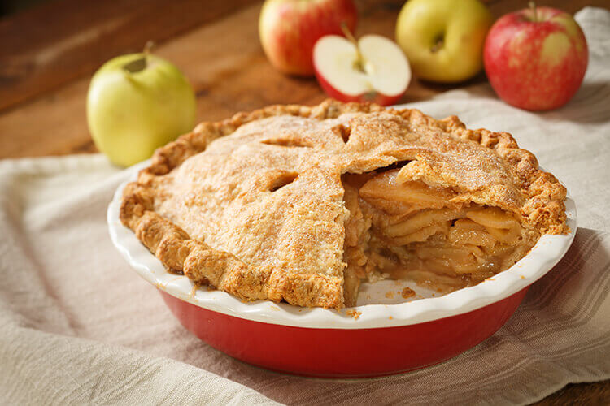

Adam's Apple Pie

PIE.
Prep time: 25 minutes. Cook time: 1 hour. Servings: 12. Yield 1 9x13 inch pan.
Ingredients lists
- ccoking spray
- all purpose flour
- white sugar
- vegetable oil
- eggs
- salt
- baking soda
- vanilla extract
- ground cinnamon
- apples - peeled, cored, and chopped
Steps
- Preheat oven to 350 F.
- Spray 9x13 pan with cooking spray.
- Combine flour sugar vegetable oil eggs salt baking soda vanilla extract and cinnamon in a lgarge bowl; mix well.
- Bake for 30 minutes, or until cheese is melted and bubbly.
- Stir in chopped apples until just combined.
- Pour batter into the pan
- Bake in the preheated oven; about 1 hour.